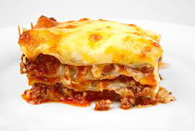

Lasagna

Description
Lasagne is the plural word for one sheet of lasagna and is used regionally throughout Italy. Referencing lasagne or lasagna depends on whether you're in the northern or southern regions of Italy.
The plural form is mostly used in British English, while American English is known to use the singular version.
Ingredients
- 2 olive oil, plus a little for the dish.
- 750g lean beef mince.
- 90g pack prosciutto.
- tomato sauce.
- 200ml hot beef stock.
- a little grated nutmeg.
- 300g pack fresh lasagne sheets.
- white sauce.
Steps
- Spread a thin layer of pasta sauce in the bottom of a baking dish.
- Make a layer of cooked lasagna noodles.
- Spread an even layer of the ricotta cheese mixture.
- Spread an even layer of meat sauce.
- Repeat those layers two times.
- Top it with a final layer of noodles, sauce, mozzarella, and parmesan cheese.